리눅스마스터-1급 (2005-03-19 기출문제)
1과목: 리눅스 실무의 이해
1. 최근 안정적인 대용량 데이터 처리를 위해 리눅스 클러스터링(Clustering)이 많이 사용되고 있는데 이러한 클러스터링 시스템 기능 중 다수 접속서버-대용량 저장장치 기반의 파일 클러스터링 시스템에 가장 역점을 둔 시스템 성능 요소로 알맞은 것은?
- 처리능력(Throughput)
- 총 소요시간(Turnaround Time)
- 신뢰도(Reliability)
- 사용가능도(Availability)
(정답률: 20%)

2. 다음중 최근 운영체제의 특징들을 나열한 것 중 알맞은 것은?
- 다중사용자 - 네트워킹 기능 - 구형 프로세스 최적화
- 멀티태스킹 환경 - 멀티미디어 환경 - CLI(Command Line Interface) 환경
- 계층적 파일 시스템 - 가상 메모리 지원 - 분산 디렉터리 서비스
- 편리한 사용자 인터페이스 - 수동 시스템 업데이트 - 비대화형 시스템
(정답률: 58%)
3. 다음 설명중 ( )안에 들어갈 내용으로 알맞은 것은?
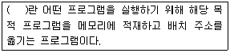
- 로더(Loader)
- 링커(Linker)
- 컴파일러(Compiler)
- 어셈블러(Assembler)
(정답률: 54%)
4. 다음중 컴퓨터 운영체제 고유의 주요 기능과 거리가 먼 것은?
- 사용자가 컴퓨터를 사용할 수 있는 인터페이스를 구현해 준다.
- 사용자들 간에 하드웨어 및 데이터 공유를 가능 토록 해 준다.
- 새로운 응용 소프트웨어가 개발할 수 있도록 해준다.
- 컴퓨터의 CPU, 메모리, HDD등 자원관리를 한다.
(정답률: 72%)
5. 다음에서 설명하는 것으로 알맞은 것은?
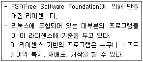
- GNU
- GPL
- LGPL
- BSD
(정답률: 34%)
6. 다음중 리눅스에서 지원하는 software RAID 종류가 아닌 것은 어느 것인가?
- RAID 0
- RAID 1
- RAID 1+0
- RAID 3
(정답률: 43%)
7. 다음 SCSI 장치에 대한 설명 중 ( )안에 순서대로 들어갈 내용으로 알맞은 것은?
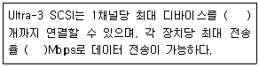
- 7, 160
- 10, 320
- 14, 160
- 21, 320
(정답률: 22%)
8. 다음은 어떤 부트매니저의 환경 설정 파일이다. 관리자 비밀번호를 잊은 경우 이를 복구하기 위해 ㈀에 들어갈 내용으로 알맞은 것은?
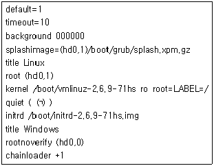
- 1
- 2
- 3
- 5
(정답률: 50%)
9. 다음중 MBR에 설치된 리눅스 부트로더인 LILO를 삭제하는 방법으로 알맞지 않은 것은?
- 리눅스에서 lilo -u 명령어를 이용해서 삭제한다.
- 리눅스에서 lilo -U 명령어를 이용해서 삭제한다.
- 도스에서 fdisk /mbr 명령어를 이용해서 삭제한다.
- 리눅스에서 fdisk -mbr 을 이용해서 삭제한다.
(정답률: 24%)
10. 다음 설명 중 ( )안에 순서대로 들어갈 내용으로 알맞은 것은?
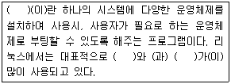
- 부팅파일 - config.sys - autoexec.bat
- 시스템프로그램 - loadlin - lilo
- 부트 매니저 - lilo - grub
- 멀티부팅 - 부트 메니저 - lilo
(정답률: 73%)
11. 다음중 CPU의 구성 장치로 알맞지 않은 것은?
- 레지스터(Register)
- BUS
- 제어장치(Control Unit)
- 산술논리연산장치(ALU:Arithmetic-Logic Unit)
(정답률: 60%)
12. 다음중 리눅스가 X-Window 모드로 부팅시, 실행되는 데몬 설정이 저장되어 있는 디렉터리 위치로 알맞은 것은?
- /etc/inittab
- /etc/sysconfig
- /etc/X11
- /etc/rc.d/rc5.d
(정답률: 15%)
13. 시스템 관리자 홍길동은 USB 이동형 저장장치를 이용해서 리눅스 시스템에 저장된 데이터를 백업 하고자 한다. 이럴 경우 USB 이동형 저장장치를 리눅스의 USB 포트에 연결시 이를 사용하기 위한 마운트 장치명과 가장 관련이 깊은 것은?
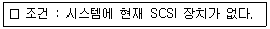
- /dev/null
- /dev/ide
- /dev/usbfs
- /dev/sda
(정답률: 35%)
14. 다음 중 리눅스 시스템의 디렉터리와 각 기능 및 내용이 알맞지 않은 것은?
- /etc : 리눅스의 각종 환경 설정 파일들이 위치하는 디렉터리이다.
- /home : 관리자의 홈디렉터리이다.
- /var : 시스템에 사용되는 동적 파일들이 저장되는 디렉터리이다.
- /tmp : 임시 파일들을 위한 디렉터리이다.
(정답률: 50%)
15. 다음중 시스템이 제어 불가능일 때, shutdown 명령어를 이용하여 시스템 종료시 사용되는 옵션으로 알맞은 것은?
- -h
- -p
- -n
- -k
(정답률: 19%)
16. OSI(Open System Interconnection) 네트워크 모델을 발표한 기관으로 알맞은 것은?
- OSI
- ISO
- IEEE
- ITU
(정답률: 74%)
17. 다음 OSI 7 계층 중 이름과 구분이 알맞지 않은 것은?
- 표현 계층(Presentation Layer) - 7 계층
- 세션 계층(Session Layer) - 5 계층
- 네트워크 계층(Network Layer) - 3 계층
- 데이터링크 계층(Datalink Layer) - 2 계층
(정답률: 62%)
18. 네트워크에서 VLAN 을 구성할 경우 얻을 수 있는 이점으로 알맞지 않은 것은?
- 브로드캐스트 제어(Broadcast Control)할 수 있다.
- 높은 보안성(Security)을 제공한다.
- 네트워크의 유연성 및 확장성(Flexibility and Scalability)을 제공한다
- 네트워크 대역 성능이 낮아진다.
(정답률: 68%)
19. TCP/IP 프로토콜중 TCP 헤더의 구성필드에 대한 설명이 알맞지 않은 것은?
- Source Port/Destination Port : SP는 보내는측 포트번호, DP는 목적지 포트 번호이며, 포트의 크기는 32Bit 만큼의 포트를 갖는다.
- Sequence Number : TCP 세그먼트안에 데이터의 송신바이트 흐름의 위치를 나타낸다.
- HLEN : TCP 세그먼트의 길이를 정의한다.
- CHECKSUM : TCP 세그먼트의 중간데이터 훼손 및 변조에 대비하여, 체크섬값을 해당 헤더에 기록한다.
(정답률: 12%)
20. 표준 C Class IP 주소 255개를 부여받아서, 서브넷 마스크 주소를 255.255.255.192 를 사용하고자 한다. 이 때, 사용할 수 있는 네트워크의 개수로 알맞은 것은?(단, Zero Subnetting 기준의 개수로 한다.)
- 1 개
- 2 개
- 4 개
- 8 개
(정답률: 39%)
2과목: 리눅스 시스템 관리
21. 다음중 telnet으로 리눅스 시스템에 접근시 일반 사용자로만 로그온 가능한 시스템에서 관리자 모드로 시스템을 관리 할 수 있도록 해주는 명령어와 가장 관련이 깊은 것은?
- login
- chmod
- chroot
- su
(정답률: 57%)
22. 다음 중 리눅스 시스템의 관리자 신분확인 정보를 볼 수 있는 명령어로 알맞지 않은 것은?
- find
- finger
- id
- whoami
(정답률: 45%)
23. 시스템 관리자 홍길동은 원격지에서 리눅스 시스템 유지 보수를 위해 일정기간 일반 사용자가 리눅스 시스템에 로그온 하지 못하도록 하려고 한다. 이럴 경우 웹서비스 등 다른 서비스들은 정상적으로 제공하면서 일반사용자들이 로그온하지 못하도록 하기위해 사용될 환경설정 파일과 가장 관련이 깊은 것은?
- /etc/hosts.deny
- /etc/passwd
- /etc/security
- /etc/nologin
(정답률: 31%)
24. 다음 각 명령어에 대한 설명으로 바르게 짝지어 진 것이 아닌 것은?
- adduser - 사용자 추가
- chfn - 사용자 홈디렉터리 변경
- usermod - 사용자 계정 UID 변경
- userdel - 사용자 삭제
(정답률: 64%)
25. 다음 내용에 대한 설명이 알맞지 않은 것은?
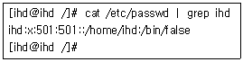
- 로그온 이름이 ihd 이다.
- 현재 비밀번호는 1자리 수이다.
- 홈디렉터리는 /home/ihd 이다.
- 이 계정은 현재 로그온이 불가능하다.
(정답률: 57%)
26. 다음 내용에서 설명하는 것으로 알맞은 것은?
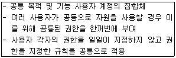
- 사용자 계정
- 관리자 계정
- 다중 사용자 계정
- 그룹 계정
(정답률: 45%)
27. 리눅스에서 일반 사용자계정을 추가할 때 다음 조건에 만족하는 명령어를 완성하고자 한다. 이럴 경우 ( )안에 들어갈 내용으로 알맞은 것은?
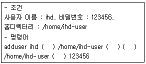
- -d, -m, -k, -p
- -a, -m, -d, -p
- -m, -k, -d, -p
- -d, -a, -m, -p
(정답률: 37%)
28. 레드햇 기반에서 다음 명령어에 대한 설명으로 알맞지 않는 것은?
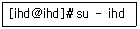
- 관리자 계정에서 ihd 라는 사용자 계정으로 전환하고자 한다.
- 명령어를 실행한 뒤 ihd 계정으로 전환되어도 Shell 환경변수는 root의 것을 사용한다.
- 명령어를 실행하면 자동으로 ihd 홈디렉터리로 이동한다.
- 일반사용자로 전환시 비밀번호는 요구하지 않는다.
(정답률: 25%)
29. 다음중 리눅스 그룹 계정 관리에 사용되는 유틸리티로 알맞지 않은 것은?
- chgrp
- groupadd
- groupdel
- groupmod
(정답률: 43%)
30. 다음은 리눅스 파일의 권한 변경에 관련된 명령어이다. 이 명령어와 동일한 효과를 내는 명령어로 알맞은 것은?(문제 오류로 실제 시험에서는 1,2,4번이 정답 처리 되었습니다. 여기서는 1번을 누르시면 정답 처리 됩니다)
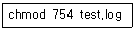
- chmod u+rwx,g+rx-w,o+r-wx test.log
- chmod a+r,u+wx,g+x-w,o-wx test.log
- chmod u+rwx,g+rx,o+rwx test.log
- chmod a+r,u+wx,g+rx-w,o-wx test.log
(정답률: 62%)
31. 다음 파일 권한의 절대 모드를 상대 모드로 표시한 것 중 알맞은 것은?
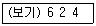
- rwxrw-r--
- rw--w-r--
- rw-r-x-r--
- r-xr----x
(정답률: 59%)
32. 다음 중 리눅스에서 파일 사용 권한의 종류로 알맞지 않은 것은?
- 읽기
- 관리
- 쓰기
- 실행
(정답률: 67%)
33. 다음 파일 권한에 대한 설명으로 알맞지 않은 것은?
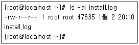
- 이 파일의 소유자는 root이다.
- 이 파일은 현재 실행 모드가 없다.
- 파일 소유자 외 나머지 사용자들은 접근권한이 없다.
- 이 파일은 소유자만이 내용을 수정 가능하다.
(정답률: 55%)
34. 시스템 관리자 홍길동은 리눅스 시스템의 하드 디스크가 갑작스럽게 소음을 내며 특정 데이터만 읽기 오류가 발생하는 것을 발견하였다. 이럴 경우 시스템의 이상유무를 판단하기 위해 가장 먼저 사용해야 할 도구로 알맞은 것은 어느 것인가?
- fsck
- badblocks
- fdisk
- mount
(정답률: 16%)
35. 다음 /etc/fstab 내용에 대한 설명 중 알맞지 않은?
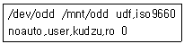
- 누구든지 /dev/odd 장치를 마운트 할 수 있다.
- mount /mnt/odd 명령어로 마운트 할 수 있다.
- mount /dev/odd 명령어로 마운트 할 수 있다.
- 마운트 시 읽고, 쓰기가 가능하다.
(정답률: 52%)
36. 리눅스에서 fdisk 를 이용하여 swap 파티션을 만들기 위해 n을 눌러 파일시스템을 새로 생성하였다. 그렇다면 그 다음에 파티션 ID를 변경하기 위해 필요한 옵션으로 알맞은 것은?
- w
- q
- t
- c
(정답률: 25%)
37. 다음중 ext2 파일시스템을 ext3로 변환하기 위해 사용되는 유틸리티로 알맞은 것은?
- mkfs
- mkext3
- tune2fs
- fsck
(정답률: 19%)
38. 다음 중 KDE 환경에서 제공하는 터미널 창에서 init 3 명령어를 실행했을 경우의 설명으로 알맞은 것은?
- 콘솔 로그온 화면이 나타난다.
- 시스템이 재시작 한다.
- 시스템이 종료한다.
- X-Window가 재시작한다.
(정답률: 45%)
39. 리눅스 시스템의 timer가 정상적으로 동작하기 위해 일정기간 반복적으로 timer의 시간을 교정해 주는 프로그램이 동작해야 한다. 이럴 경우 다음 중 가장 관련이 깊은 것은?
- pstree
- nohup
- nice
- cron
(정답률: 24%)
40. 다음중 RPM 패키지를 제작할 때 패치 파일을 만드는 명령어로 알맞은 것은?
- diff
- patch
- p2
- get
(정답률: 13%)
41. 다음 중 커널이나 소스패치를 할 때 패치할 소스의 일부분을 자동으로 변경해주는 유틸리티로 알맞은 것은?
- diff
- make
- gcc
- patch
(정답률: 29%)
42. 다음 중 시스템의 전원 및 배터리 관련된 상태를 관리하는 데몬으로 알맞은 것은?
- amd
- apmd
- autofs
- nfs
(정답률: 44%)
43. 커널 2.4 로 부팅할 때, init process 가동전 까지 인식할 수 있는 하드웨어의 범위안에 해당하지 않는 것은?
- USB
- IDE Controller
- Processor Type
- Keyboard Controller
(정답률: 28%)
44. 다음 파일 시스템 관련 명령중 해설이 알맞지 않은 것은?
- fdisk, cfdisk - 텍스트기반으로 파티션을 설정하고, 마운트한다.
- mkfs - 파일 시스템을 만든다.
- fsck - 파일시스템의 에러 체크를 한다.
- df - 디스크의 사용량을 보여준다.
(정답률: 58%)
45. swap 파티션에 대한 특징과 설명으로 알맞지 않는 것은?
- 최대 4GB swap 사이즈를 지원한다.
- 8개의 swap 파티션을 지원한다.
- 각 스왑 파티션의 최대 크기는 2GB 까지 이다.
- 2 Processor 이상의 시스템에서는 swap 파티션의 설정이 불필요하다.
(정답률: 39%)
46. 리눅스에 하드웨어를 설치함에 있어, 중복될 수 있는 자원으로 알맞지 않은 것은?
- DMA Channels
- IRQs
- I/O Port Addresses
- Slot
(정답률: 35%)
47. 리눅스의 하드디스크에 관련된 서술로서 알맞지 않은 것은?
- ide 하드디스크 디바이스명은 hda부터 hdt까지 이다.
- 하드디스크의 파티션은 최대 63개 까지 지원 한다.
- primary 파티션은 4개까지 지원한다.
- extended 파티션은 2개 까지 지원한다.
(정답률: 42%)
48. 리눅스에 새로운 하드디스크를 추가하고, 마운트 하고자 한다. 리눅스에서 지원하지 않는 파일 시스템으로 알맞은 것은?
- ext2, ext3
- minix
- ntfs, hpfs
- zfs
(정답률: 22%)
49. 리눅스에서 디스크 드라이브를 사용하기 위한 조건으로 알맞지 않은 것은?
- IDE 디스크드라이브는 부트디스크를 제외한 나머지 디스크를 바이오스에서 반드시 인식시킬 필요가 없다.
- SCSI 디스크 드라이브는 SCSI Controller를 먼저 커널이 인식해야 한다.
- SCSI 드라이브의 ID 값은 중복이 되어도 무방하다.
- IDE 디스크의 Master/Slave 설정은 중복이 되어선 안된다.
(정답률: 45%)
50. 리눅스 파일 시스템의 구성 내용으로 알맞지 않은 것은?
- 슈퍼블록(super block)
- 아이노드(inode)
- 데이터 블록(data block)
- 인덱스 블록(index block)
(정답률: 27%)
51. 다음 로그파일의 분석 내용 중 알맞은 것은?
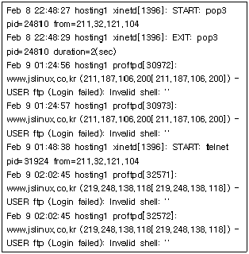
- 211.187.106.200 IP 사용자가 pop3 를 이용하여 ftp 계정 로그인을 시도하고 있다.
- 211.32.121.104 IP 사용자가 xinetd 프로세스를 구동하였다.
- 211.32.121.104 IP 사용자가 자기 자신의 메일 박스안의 메일을 확인하였다.
- 이 로그파일은 messages로그파일의 내용이다.
(정답률: 23%)
52. telnet 접속시 실패한 기록과 ID, 시간을 로그로 남기고자 한다. 해당 기록을 남기기 위한 로그파일로 알맞은 것은?(문제 오류로 실제 시험에서는 2,4번이 정답 처리 되었습니다. 여기서는 2번을 누르시면 정답 처리 됩니다)
- /var/log/last
- /var/log/btmp
- /var/lig/lastlog
- /var/log/secure
(정답률: 43%)
53. 아파치 access_log 파일의 내용 설명 중, 상태코드에 대한 설명이 알맞지 않은 것은?
- Code 200 - 요청이 유효함
- Code 403 - 요청된 엑세스가 허용되지 않음
- Code 404 - 요청된 문서가 존재하지 않음
- Code 401 - 클라이언트나 사용자의 엑세스가 허가됨
(정답률: 40%)
54. 다음중 who, users, finger 등의 명령으로 그 내용을 확인할 수 있는 로그파일은?
- sulog
- secure
- wtmp, wtmpx
- utmp, utmpx
(정답률: 22%)
55. HTTP 프로토콜을 이용한 파일 전송시 저장되는 로그로 알맞은 것은?
- access_log
- xferlog
- messages
- secure
(정답률: 25%)
56. 시스템의 물리적, 소프트웨어적인 보안 및 백업환경 구축을 위한 방법을 서술한 것 중 알맞지 않은 것은?
- 시스템은 물리적인 시건장치와 전용 전산실에서 보관하여, 외부침입으로 부터 시스템을 보안관리한다.
- 시스템은 RAID LEVEL 0 환경의 디스크를 구성함으로서, 장애시 디스크 교체로 간단히 시스템을 복구할 수 있게 한다.
- 시스템의 로그는 로그서버에 별도 백업 관리 할 수 있게 구성한다.
- NAS 나 DAT 같은 외부 백업/스토리지 매체를 적극 활용한다.
(정답률: 64%)
57. 시스템에 침입자가 침입한 경우, 침입 경로를 확인하기 위한 방법 중, 현재 시스템과 통신을 하고 있는지 확인하고자 한다. 현재 세션이 연결되어 있는 상태를 확인할 수 있는 명령 또는 파일로 알맞은 것은?
- last
- netstat
- /var/log/messages
- /var/log/secure
(정답률: 35%)
58. 사용자 계정정보 및 비밀번호 정보, 데몬설정등이 기록되어있어서, 항상 주기적으로 백업해야할 디렉토리로 알맞은 것은?
- /etc
- /etc/sysconfig
- /var/log
- /var/adm
(정답률: 14%)
59. 기존 ext2파일 시스템에서 저널링을 지원하는 ext3 로 업그레이드 하고자 한다. 기존 운영중인 시스템을 업그레이드 하는 방법을 설명한 것 중 가장 알맞은 것은?
- 시스템을 포맷하고, ext3 파일 시스템으로 재설치한다.
- fschg 명령을 이용하여 ext3 파일 시스템으로 변환한다.
- tune2fs 명령을 이용하여, 해당 파티션을 ext3로 변환한다.
- fsck.ext3 명령의 변환기능을 이용하여, 파일 시스템을 변환한다.
(정답률: 34%)
60. 다음중 백업 스크립트를 주기적으로 실행하기 위한 crontab 설정의 해석 중 알맞지 않은 것은?
- 0 1 * * * /etc/cron1.sh : 매일 오전 1시에 cron1.sh 명령 실행
- 0 1 1 * * /etc/cron2.sh : 매일 오전 1시 1분에 cron2.sh 명령 실행
- 0 1 * * mon /etc/cron3.sh : 매주 월요일 오전 1시에 cron3.sh 명령 실행
- 0 2 1 */2 * /etc/cron1.sh; /etc/cron2.sh : 매 격월(2개월마다) 1일 새벽 2시에 /etc/cron1.sh 명령과 /etc/cron2.sh 를 실행
(정답률: 35%)
3과목: 네트워크 및 서비스의 활용
61. 웹서버의 역할 중 알맞지 않은 것은?
- 클라이언트로부터의 호출에 응답하여 요청한 문서를 보여준다.
- 호스트 간의 연결작업과 데이터 전송 등에 사용되는 프로토콜은 HTTP이다.
- 주로 웹 서비스를 사용하기 위해서 사용되는 프로그램이다.
- 클라이언트의 요청에 응답을 기본 메커니즘으로 동작한다.
(정답률: 22%)
62. 아파치 설정 파일에서 웹문서의 기본 경로를 설정해주는 지시자로 알맞은 것은？
- ServerRoot "/usr/local/apache/htdocs"
- DocumentRoot "/usr/local/apache/htdocs"
- HttpdRoot "/usr/local/apache/htdocs"
- HttpdDocs "/usr/local/apache/htdocs"
(정답률: 34%)
63. 아파치 웹서버에 접속하려고 했더니 웹페이지가 나오는 것이 아니라 파일들의 목록이 그대로 화면에 출력될 경우 환경설정을 변경내용으로 알맞은 것은?
- MultiViews 옵션 추가
- MultiViews 옵션 삭제
- Indexes 옵션 추가
- Indexes 옵션 삭제
(정답률: 34%)
64. 아파치와 PHP가 연동 설치된 시스템에서 php 소스로 작성된 파일의 확장자를 .html로 만들어 저장하였다. 확인을 해보면 원하는 결과가 나타나지 않는데 이것을 해결하기 위해서는 어떻게 해야하는가?
- AddHandler application/x-httpd-php .html을 추가한다.
- AddType application/x-httpd-php .html을 추가 한다.
- AddHandler application/x-httpd-html .php를 추가한다.
- AddType application/x-httpd-html .php를 추가 한다.
(정답률: 15%)
65. 다음은 간략한 가상 호스팅에 대한 아파치 웹서버 설정 파일의 내용이다. 설정에 대한 설명으로 가장 알맞은 것은?
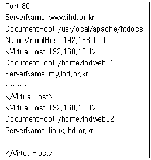
- 사용자가 www.ihd.or.kr, my.ihd.or.kr, linux.ihd.or.kr의 어느 주소로 위의 서버에 접근하더라도 모두 같은 페이지를 볼 수 있도록 설정하였다.
- 위의 가상호스트 설정은 각 웹페이지에 모두 같은 IP주소로 접근할 수 있기 때문에 IP기반 가상 호스트 설정임을 알 수 있다.
- 각각의 가상서버들에 웹을 통해 접근할 경우 각기 다른 포트번호를 통해서 접근할 수 있도록 설정이 되어있다.
- 위의 가상호스트 설정은 각 웹페이지에 모두 같은 IP주소로 접근할 수 있기 때문에 이름기반 가상 호스트 설정임을 알 수 있다.
(정답률: 36%)
66. 아파치 웹 서버의 환경 설정 파일에 대한 설명으로 알맞지 않은 것은?
- ServerType은 standalone과 inetd방식으로 운영이 가능하다. 일반적으로 standalone 방식으로 많이 사용된다.
- MaxKeepAliveRequests는 KeepAlive가 설정되어 있을 때, 지속적인 접속 동안에 허용할 최대 요청 회수를 지정하는 것이다.
- KeepAliveTimeout은 KeepAlive가 설정되어 있을 때, 정해진 시간에 클라이언트의 요청이 없을 경우 접속을 끊거나 기다리는 시간을 설정한다.
- User는 아파치 웹서버에 접속하여 로그인할 수 있는 사용자의 아이디를 말한다.
(정답률: 28%)
67. 아파치 웹서버에서는 사용자 인증을 제공하고 있는데 웹 서버 접근에 대한 인증은 물론 특정 디렉토리 접근에 대한 인증이 가능하다. 다음은 아파치 웹서버 설정파일인 httpd.conf에서 DocumentRoot인 /usr/local/apache/htdocs에 인증설정을 하여 웹 서버 접근 자체에 대한 인증 설정한 내용이다. 설명중 알맞지 않은 것은?
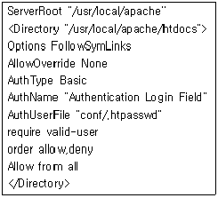
- 인증 타입은 현재 Basic을 지원하며 인증 영역에 대한 이름을 AuthName 지시자로 설정 하고 있다.
- 지정한 유저로만 디렉토리 접근을 허용하고 패스워드 인증이 올바르게 된 사용자들만 접근이 가능하다.
- 인증 사용자와 패스워드를 가진 패스워드 파일은 /usr/local/apache/conf/.htpasswd에 설정 할 수 있다.
- ihd 사용자를 등록하려고 할 때 htpasswd /usr/local/apache/conf/.htpasswd ihd로 등록 할 수 있다.
(정답률: 35%)
68. 아파치 웹서버 설정파일인 httpd.conf의 KeepAlive On이 되어있을 경우, 지속적인 접속 동안에 허용할 최대 요청횟수를 지정하는 지시자로 알맞은 것은?
- KeepAliveTimeout 15
- StartServer
- Timeout 300
- MaxKeepAliveRequests 100
(정답률: 58%)
69. 아파치 웹 서버를 PHP와 연동하여 컴파일할 경우 PHP 모듈을 아파치 코어와 함께 사용하기 위한 아파치 설정 옵션으로 알맞은 것은?
- --prefix
- --activate-module
- --with-apache
- --modules
(정답률: 15%)
70. MySQL 소스 설치 후에 MySQL이 사용할 기본 데이터베이스를 설치하려고할 경우 명령어로 알맞은 것은?
- Mysql_Install_Db
- Mysql_Db_Install
- mysql_install_db
- mysql_db_install
(정답률: 42%)
71. PHP를 소스 컴파일 설치하려고 할 때 ZendOptimizer를 사용하기 위한 설정으로 알맞은 것은？
- --enable-debug
- --disable-debug
- --enable-track-vars
- --with-ZendOptimizer
(정답률: 9%)
72. Samba 서버의 설정 파일 smb.conf 파일에서 사용할 수 있는 지시자가 아닌 것은?
- workgroup = WorkGroup
- server string = Samba Server
- browseable = no
- readerable = yes
(정답률: 24%)
73. Samba 설정 파일 smb.conf 파일에 대한 설명으로 알맞지 않는 것은?
- smb.conf 파일은 크게 Global Settings와 Share Definitions 두 부분으로 나눠져 있다.
- smb.conf 파일에서의 주석은 #, ; 과 // 모두 사용할 수 있다.
- smb.conf 파일은 일반적으로 /etc/samba에 있다.
- smb.conf 파일은 SWAT으로 설정 변경할 수 있다.
(정답률: 30%)
74. 다음은 smb.conf 파일의 Share Definitions 중 아래와 같은 내용에 대한 설명으로 알맞은 것은?(문제 오류로 실제 시험에서는 1,2,4번이 정답 처리 되었습니다. 여기서는 1번을 누르시면 정답 처리 됩니다)
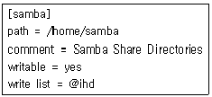
- 윈도우즈 탐색기에서 검색하면 samba라는 공유 디렉토리가 보인다.
- samba라는 공유 디렉토리에 접근하면 리눅스 시스템의 /home/samba로 접근한다.
- writable이 가능하도록 되어 있어 디렉토리의 권한에 관계없이 복사 및 삭제가 가능하다.
- samba라는 공유 디렉토리는 ihd라는 그룹에 속한 사용자만 쓰기가 가능하다.
(정답률: 50%)
75. Samba 서버에 접근시 부여되는 인증 레벨에 대한 설명으로 알맞지 않은 것은?
- share : 사용자가 요청한 자원을 연결해 주기전에 서버에 로그온하기 위한 사용자/패스워드 인증을 거치지 않는다.
- user : 기본 보안 정책으로 사용자/패스워드를 통해 삼바서버에 접근하는 모델이다.
- server : user 모드와 동일하지만 사용자 계정의 인증 처리를 현재 시스템에서 하는 것이 아니라 SMB 프로토콜을 지원하는 다른 서버를 통해 처리하는 방식이다.
- domain : 사용자 계정 인증 정보 처리를 리눅스 도메인에서 처리하는 방식이다.
(정답률: 28%)
76. Samba 서버 구동시에 실행되는 nmbd에 대한 설명으로 알맞지 않은 것은?
- 클라이언트들에게 NetBIOS를 준비하는 NetBIOS 네임서버 데몬이다.
- NetBIOS는 원거리 컴퓨터 간에 서로 통신할 수 있게 해 주는 프로그램을 말한다.
- WINS(Windows Internet Name Service) 서버의 기능도 한다.
- 이 프로그램은 samba suite중의 일부이며 실행시 UDP 137번 포트를 사용한다.
(정답률: 34%)
77. 다음은 SWAT(Samba Web Administration Tool) 프로그램에 대한 설명으로 알맞지 않은 것은?
- 웹을 통해서 Samba 환경 설정을 올바르게 관리 할 수 있다.
- Samba의 데몬을 원격에서 실행, 재실행 및 종료 할 수 있다.
- Samba 서버에 원격 로그인을 거치지 않아도 서버를 관리할 수 있는 강력한 도구이다.
- 서비스 포트 901번을 독립적으로 사용하기 때문에 웹 서버가 실행 중이어야 작동하도록 설계되어있다.
(정답률: 28%)
78. 클라이언트에서 NFS 서버를 부팅 시에 자동으로 마운트하기 위해서는 /etc/fstab에 설정을 해줘야한다. 다음 /etc/fstab에 마운트하기 위한 옵션중에서 알맞지 않은 것은?
- rsize : NFS서버로부터 읽어들이는 바이트 수를 지정. 기본은 1024바이트
- wsize : NFS서버에 기록할 때 사용하는 바이트수를 지정. 기본은 1024바이트
- timeo : 클라이언트에서 타임아웃이 발생되고 나서, 다시 재전송 요구를 보낼 때 사용하는 시간
- soft : 타임아웃이 발생하면 “server not responding” 메시지를 표시하고 계속 재시도
(정답률: 53%)
79. NFS의 설정 파일인 /etc/exports에 대한 설명으로 알맞지 않는 것은?
- root_squash 옵션은 클라이언트에서 root 사용자를 서버에서의 nobody 사용자로 매핑한다.
- no_root_squash 옵션은 클라이언트의 root사용자를 서버에서의 root 사용자로 매핑한다.
- /etc/exports 파일은 서버와 클라이언트 모두 설정해야 정상적인 서비스가 가능하다.
- /etc/exports 파일은 마운트 디렉토리와 마운트 할 수 있는 시스템의 목록과 옵션을 설정한다.
(정답률: 40%)
80. 여러 시스템에서 파일이나 디렉토리를 공유하는데 사용하는 서비스인 것은?
- SSH
- MTA
- NFS
- DNS
(정답률: 62%)
81. 다음은 ProFTPD의 설정파일인 proftpd.conf의 일부이다. 다음 설명 중에 올바른 것은?
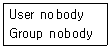
- User nobody - ProFTPD 서버에 로그인할 사용자 ID를 설정한 것이다.
- Group nobody - ProFTPD 서버에 로그인할 그룹 ID를 설정한 것이다.
- User nobody - ProFTPD 서버를 실행 시에 생성되는 프로세스의 사용자 권한을 설정한 것이다.
- Group nobody - ProFTPD 서버를 실행시키면 생성되는 프로세스 그룹을 설정한 것이다.
(정답률: 60%)
82. 송신자가 작성한 메시지와 사전에 준비한 수신자의 공개키를 이용하여 암호화한 후 전송하면 수신자는 자신의 비밀키로만 열 수 있어 다른 사람이 메시지를 도청하려 하더라도 내용을 볼 수 없도록 하는 보안로 알맞은 것은?
- ssh
- pam
- ssl
- pgp
(정답률: 18%)
83. 아웃룩(outlook), 파인(pine), 유도라(eudora) 등의 프로그램은 POP나 IMAP 서버에 접속하여 저장된 메일을 사용자들이 보기 위해 사용하는 프로그램들이다. 관련된 용어로 알맞은 것은?
- MTA(Mail Transfer Agent)
- MUA(Mail User Agent)
- MDA(Mail Delivery Agent)
- MMA(Mail Mover Agent)
(정답률: 43%)
84. sendmail에서 스팸메일을 방지하기 위해서 제공하는 메일 릴레이 기능은 때로는 메일서버를 운영하는데 딜레마에 빠지게 한다. 왜냐하면 많은 사용자들이 ADSL, Cable Modem을 이용한 네트워크 사용자이기 때문에 mail의 relay를 설정하기가 매우 어렵다는 점이다. 이러한 문제를 해결하기 위해서 사용되는 용어와 프로그램으로 알맞지 않는 것은?
- 동적 릴레이(Dynamic Relay)
- DRAC(Dynamic Relay Authorization Control)
- DRAL(Dynamic Relay Authorization Layer)
- SASL(Simple Authentication and Security Layer)
(정답률: 5%)
85. POP3의 인증을 거친 클라이언트의 IP주소를 기록하여 SMTP 서비스를 할 수 있도록 해주는 동적 릴레이 허용 프로그램으로 알맞은 것은?
- DRAC(Dynamic Relay Authorization Control)
- DRAL(Dynamic Relay Authorization Layer)
- SASC(Simple Authentication and Security Control)
- SASL(Simple Authentication and Security Layer)
(정답률: 38%)
86. qmail에 대한 특징과 이에 대한 설명으로 알맞지 않은 것은？
- 안전성 : sendmail에 비해 탁월한 보안성을 갖추고 있음
- 효율성 : 펜티엄급에서도 200,000건의 메시지도 하루에 빠른 처리능력 보유
- 다양성 : 메일 포워딩, 메일링 리스트 메커니즘, 앨리어싱 등을 보유하여 다양한 조작이 가능
- sendmail 대체 MTA : sendmail 비대함, 결함 등에 비해 안정성, 속도와 신뢰성 등으로 대체 가능
(정답률: 22%)
87. sendmail의 설정파일인 sendmail.cf 설정의 일부 이다. 다음 중 설명이 알맞지 않은 것은?
- 사용자에게 온 메일을 포워딩(forwarding)하는 옵션이다.
- 사용자 자신의 홈디렉토리에 .forward 파일을 만들어 사용할 수 있다.
- 사용자 자신의 홈디렉토리에 .forward 계정 파일을 만들어 사용할 수 있다.
- 포워딩(forwarding)은 메일주소를 한 행에 한 개씩 작성하여 사용할 수 있다.
(정답률: 22%)
88. 다음은 sendmail의 메일 릴레이(Relay)를 제어하는 파일인 /etc/mail/access의 예이다. 설명 중 올바르지 못한 것은?
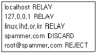
- 자신의 시스템 내에서는 메일 수신이 가능하다.
- 호스트명, 메일주소 등과 설정은 반드시 Tab으로 띄어야 한다.
- root@spammer.com 주소로 오는 메일은 거부 메시지 없이 폐기한다.
- linux.ihd.or.kr라는 호스트의 릴레이(Relay)는 허용한다.
(정답률: 35%)
89. 슈퍼데몬 inetd보다 기능 및 보안 강화된 xinetd 데몬의 특징으로 알맞지 않은 것은?
- TCP, UDP, RPC 서비스 접근 제어 조절 기능
- 서비스 거부(Denial Of Service) 공격 방지
- 철저한 로깅 기능
- TCP Wrapper의 완벽한 분리
(정답률: 38%)
90. 위의 DNS 서버의 forward 영역 파일에 대한 설명으로 적절하지 않는 것은?
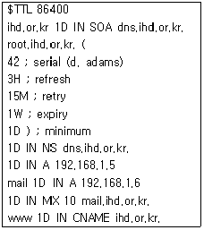
- ihd.or.kr의 네임서버는 dns.ihd.or.kr이라는 이름을 갖는다.
- ihd.or.kr와 dns.ihd.or.kr의 IP주소는 192.168.1.5 이다.
- 메일서버는 mail.ihd.or.kr이며 IP주소는 192.168.1.6 이다.
- ihd.or.kr은 dns.ihd.or.kr 또는 root.ihd.or.kr로도 접근이 가능하다.
(정답률: 29%)
91. NIS 시스템에서 사용되는 프로그램들에 대한 설명으로 알맞은 것은?
- ypserv - NIS 마스터 서버에서만 실행되어야 하는 NIS 서비스의 주 데몬이다.
- ypbind - NIS 서버와 NIS 클라이언트 사이의 바인딩을 담당하는 데몬으로서 NIS 서버와 NIS 클라이언트 모두에서 실행되어야 한다.
- ypxfrd - NIS master에서 NIS slave서버들로 전송되는 매우 큰 NIS map들에 대한 전송 속도를 향상시키기 위한 것이다.
- yppasswd - yppasswd명령어의 요청으로 시스템 패스워드를 변경해주는 데몬이다.
(정답률: 20%)
92. 다음 해킹기법중 성격이 다른 것은?
- smurf
- syn flooding
- ping attack
- port scan
(정답률: 36%)
93. 시스템의 해킹을 미연에 예방하고, 해킹에 의한 시스템의 변형을 방지하기 위한 기술적 대처방안으로 알맞지 않은 것은?
- inetd 서비스를 xinetd 서비스로 교체한다.
- tripwire 같은 프로그램을 설치하고, 체크섬 파일을 하드디스크에 기록할 때, 퍼미션을 잠가둔다.
- password 는 md5 기반의 shadow 시스템으로 운영하도록 한다.
- 시스템의 주요 바이너리 파일들의 변경 여부를 조사하고, 복구한다.
(정답률: 28%)
94. 운영하던 시스템이 해킹당한 경우 취해야할 행동으로 알맞지 않은 것은?
- cron/at 와 같은 스케쥴러에 등록된 모든 프로그램을 검사한다.
- 인가받지 않은 서비스 및 포트를 모두 조사한다.
- /etc/passwd 파일을 조사하여, 변경된 부분이 있는지 확인한다.
- 시스템의 모든 프로그램을 최근 백업본 프로그램과 모두 교체하여 정상복구 시킨다.
(정답률: 41%)
95. 같은 IP 주소대역을 사용하는 LAN 구간안에 있는 리눅스 서버를 네트워크내의 특정 클라이언트만 접근가능하도록 설정하고자 한다. 가장 안정성이 높고, 내부 사용자의 해킹을 막을 수 있는 방법으로 알맞은 것은?(단, 사용자의 불편함이 최소한인 방법을 우선으로 한다.)
- 서버상에서 IP 주소 기반 필터를 이용한 접근 차단
- VPN 을 통한 인증
- VLAN 을 구성하여, 네트워크 분리
- 단독 LAN 을 구성하여, 독자적인망을 구성
(정답률: 13%)
96. 레드햇 리눅스에서 PAM 모듈 파일을 저장하고 있는 디렉토리 경로로 알맞은 것은?
- /etc/modules
- /lib/security
- /lib/modules
- /etc/security
(정답률: 18%)
97. RFC 1033 등에서 정의되어 있는 DNS 서버 설정시 사용하는 표준자원레코드의 설명이 알맞지 않는 것은?
- SOA : 영역데이터의 유효 시작 시기와 전체 영역에 미치는 인자를 정의한다.
- NS : 도메인의 네임서버를 지정한다.
- A : 호스트 이름을 IP 주소로 변환한다.
- CNAME : IP 주소를 호스트 이름으로 변환한다.
(정답률: 28%)
98. 다음 중 일반적인 sendmail.cf 구조에 해당하지 않는 섹션은?
- Local Information
- Options
- Relay
- Message Precedence
(정답률: 13%)
99. 다음은 슈퍼데몬(xinetd)의 설정 옵션과 이에 대한 설명이다. 알맞지 않은 것은?
- only_form : 접근이 인가된 클라이언트 목록에 대한 정의
- nice : 서버가 성공적으로 실행되었을 때 저장할 로그를 정의
- instance : 동시에 작동할 수 있는 동일 유형 서버의 최대수를 정의
- server_args : 구동시킬 서버에 주어지는 인자를 정의
(정답률: 34%)
100. 대표적인 프록시 서버인 squid에 대한 설명으로 가장 알맞지 않은 것은?
- 사용자가 웹 브라우저를 이용하여 웹 서핑을 할 때 향상된 속도로 사용할 수 있도록 한다.
- squid는 사용자가 프록시 서버를 자동으로 사용할 수 있도록 클라이언트 자동 설정을 지원하고 있다.
- 기본값으로 서비스 포트 3128번을 사용하지만 설정을 변경하여 서비스 포트 8080번도 이용 할 수 있다.
- proxy란 대리인이라는 의미로서 사용자가 사용했던 데이터를 확보된 일정 공간에 캐시(cache)해 두었다가 사용자의 요청 시, 저장된 데이터를 재사용할 수 있다.
(정답률: 16%)